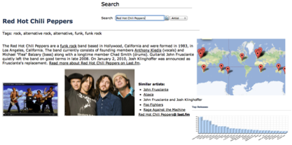

In the previous chapter we described how linked data could be made available, for example, via a data dump or SPARQL endpoint. The emphasis was on providing data in a form readable by machines such as RDF/XML or Turtle. The results of a SPARQL query could be provided in a format such as JSON that a software developer could then use to develop an application. In this chapter, rather than focussing on how data can be made available to applications in machine-readable form, we will look at how linked data can be presented for use by a human audience.
In this chapter we will once again use music as a motivating example but focus on modules that enable people can interact with and explore music-related data. We consider how RDF data could be visualised and also how statistical and machine learning techniques can be used to extract interesting patterns from data.
Applying visualization techniques to RDF data provides much more engaging ways of communicating data. As illustrated in figure 1, a user may initiate the process by entering a search query. The semantics of the resources returned from the search can then be used to construct a coherent presentation of the information. Text descriptions of RDF resources can be embedded with links to other resources and also other media such as images. Sets of resources, such as the single or album releases of a band, can be aggregated and presented in different forms such a map (showing for example where they were released) and bar chart (showing for example the number of individual releases of each work).

Figure 1: Visualization of music-related data (from [1]).
Visualizations have a number of advantages in how they communicate data. Visualizations make it possible to tell a story with the data, giving it some meaning and interpretation. Visualizations also make it easier for people to spot patterns in the data such as changes over time or between different locations. Visualizations can also reveal differences between datasets that may not be apparent from simple descriptive statistics such as the mean and variation of a set of values. An interesting example is Anscombe's quartet of datasets (see figure 2). The four datasets have a number of statistical properties in common such as the mean and variance of the x and y variables and the correlation and regression values between x and y. However differences between the datasets are clearly apparent when visualized.
Figure 2: Anscombe's quartet of datasets having similar statistical properties but appearing very different when plotted [2].